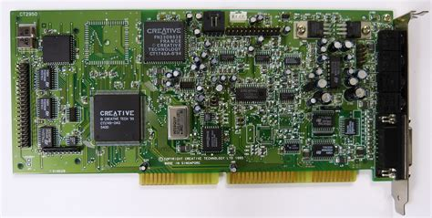
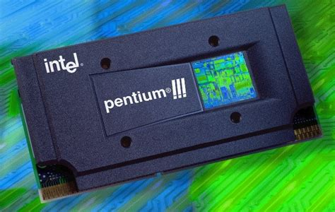

3dfx Voodoo
A legendary graphics card from the 1990s.
A collection of classic computer hardware from the 1980s, 1990s and early 2000s.
A legendary graphics card from the 1990s.

A popular sound card from the 1990s.

A popular processor from the late 1990s.
A small archive dedicated to classic computer hardware and technology.